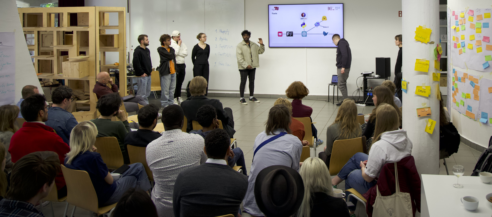

An intensive, inter- and transdisciplinary exploration of the opportunities, risks and challenges of AI from very different perspectives was the focus of the block course "Ethics and Epistemology of AI" hosted by Prof. Sabine Ammon (Philosophy of Technology, TU Berlin) and Prof. Christoph Benzmüller (AI Systems Development, University of Bamberg & FU Berlin) from May 1-5, 2023, at the Hybrid Lab of TU
Berlin.
Further tutors of the event included:
Rahel Moser (TU Berlin, Philosophy
of Technology, organizational coordination),
Rosae Martin-Peña (U
Bamberg, Philosophy & AI),
Veronika Solopova (FU Berlin, AI &
Computational Linguistics) and
Ina Peters (TU
Berlin, Education for Sustainable Development).
About 40 students from 7 universities were selected to participate
from numerous national and international applications. In addition to
TU Berlin, FU Berlin and the University of Bamberg, there were
participants from Poland, Denmark, Spain and Norway, partly supported
by the ERASMUS+ program.
Divided into 5 project groups of 6-9 persons each, the students
explored new solutions and concepts on the following topics:
The project studies will continue in remote activities during the summer semester 2023. Final presentations will take place in July, the final submission of the project reports will be in August.
All participants were very positive about the block event in
Berlin. A variety of intensive forms of interaction in the Hybrid Lab
on the TU campus from morning to evening allowed the participants to
network far beyond a normal course level, both in terms of content and
personal exchange. Especially after years of Corona's isolation, this event demonstrated the great benefits, fun, and enjoyment that can come from intensive on-site training on intrinsically motivating challenge topics.
For further information see also this website
hosted at TU Berlin.
The following pictures provide some impressions of the event.
